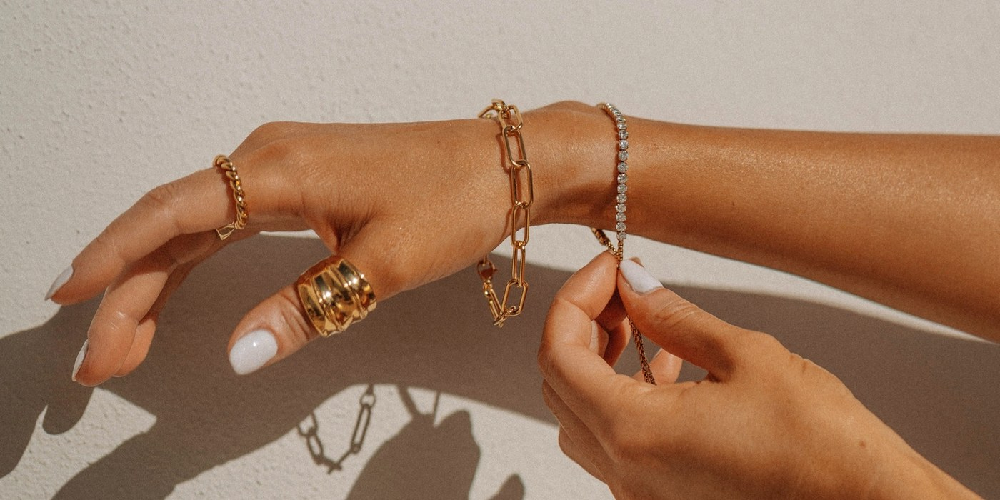

One Good Piece: Buying Gold Jewelry When Gold Is Expensive
Gold has rarely cost more. That is a reason to buy less and choose better, whether the piece is a gift or for yourself.

Every November the same question arrives: what to give, and what to ask for. If the answer is gold, this year it comes with a second question, because gold has rarely been so expensive. The World Gold Council's latest report on jewellery demand, for the third quarter of 2026, describes buyers around the world turning to lighter, smaller and lower-carat pieces as high prices bite. In Europe, fewer pieces were sold, yet more money was spent on them.
That is not a bad instinct. It is, in fact, the Parisian one: fewer things, chosen with more care. Here is how to buy one good piece of gold well.
Understand what you are paying for
The carat number tells you how much of the metal is actually gold. Eighteen carat is 75 per cent gold, often stamped 750. Nine carat is 37.5 per cent, stamped 375. In France, solid 18-carat gold carries a small eagle's head hallmark, while 9 carat carries a three-leaf clover. If you buy in Paris, or buy French vintage, look for these marks with a loupe.
- 18 carat has the deep, warm colour most people picture when they think of fine gold. It is the standard for serious jewelry in France and Italy.
- 9 or 14 carat is paler and harder, so it scratches less. It costs less for the same design, and for a fine chain or a small ring that is worn daily it is a perfectly honest choice.
- Gold-plated and vermeil pieces have a thin layer of gold over another metal. They can be pretty, but the layer wears away with time. Buy them as fashion, not as an heirloom.
Choose lightness, not thinness
A lighter piece does not have to look meagre. Hollow links, a fine chain with a clever clasp, a narrow band with a beautiful profile: good design makes a small amount of gold look generous. What to avoid is a piece so thin that it bends, tangles or snaps within a season. Pick it up. It should feel solid in the hand, even if it is small.
The pieces worth one good purchase
- A chain you never take off. Medium length, sitting just below the collarbone, so it shows over a turtleneck and inside an open shirt.
- A small charm with meaning. Charms have grown up. One initial, a coin or a tiny medallion on a fine chain is personal without being sweet, and it can be added to over the years.
- A signet or pinky ring. A clean, slightly weighty ring worn on the little finger is one of the quietest ways to wear gold. It suits both hands, and both jeans and tailoring.
- Small hoops or studs. Earrings are the piece people see first, and the one you reach for without thinking.
- A ring with colour. If you want one stone, choose colour rather than size. Pomellato, founded in Milan in 1967, built its Nudo rings around a single coloured gemstone in a gold setting, a good illustration of how colour can carry a piece without any diamonds at all.
New, vintage or pre-owned
Vintage and pre-owned gold is worth a serious look, especially from France and Italy, where hallmarks make it easier to check what you are buying. A signed piece from a known maison can hold its value better than an unsigned new one. Ask for the hallmarks, the weight in grams and, for anything signed, a receipt or certificate. For a watch, the same logic applies; our guide to buying a pre-owned Cartier lists what to check.
If it is a gift
- Look at what the person already wears, and match the colour of the gold rather than guessing.
- Choose earrings or a chain over a ring if you do not know the size.
- Ask about resizing and exchange before you pay, not after.
- Keep the box, the receipt and the hallmark details together. One day they will matter.
The quiet arithmetic
An expensive piece worn every day for twenty years is, in the end, a modest purchase. A cheap one that sits in a drawer is not. That is the logic of cost per wear, and it applies to gold more than to anything else in a wardrobe. Once you have it, wear it the way we describe in our guide to everyday gold: with knitwear, with denim, and without a second thought.